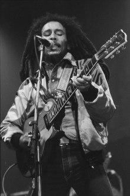

The Life of Bob Marley
uneheliche Kinder
- Mit Janet Hunt: Rohan (* 1972)
- Mit Patricia Williams: Robbie (* 1972)
- Mit Janet Bowen: Karen (* 1973)
- Mit Lucy Pounder: Julian (* 1975)
- Mit Anita Belnavis: Ky-Mani (* 1976)
- Mit Cindy Breakspeare: Damian (* 1978)
- Mit Yvette Crichton: Makeda (* 1981)
Alben
- The Wailing Wailers
- Soul Rebels
- Soul Revolution
- African Herbsman
- Catch a fire
- Burnin
- Natty Dread
- Rastaman VBibration
- Exodus
- Kaya
- Survival
- Uprising
- Confrontation
Internationale Tourneen
- April bis Juli 1973: Catch a Fire Tour – England, USA
- Oktober und November 1973: Burnin Tour – USA, Jamaika, England
- Juni und Juli 1975: Natty Dread Tour – USA, Kanada, England
- April bis Juni 1976: Rastaman Vibration Tour – USA, Kanada, Deutschland (Hamburg, Düsseldorf), Niederlande, Frankreich, England, Wales
- Mai und Juni 1977: Exodus Tour – Frankreich, Belgien, Niederlande, Deutschland (München, Heidelberg, Hamburg, West-Berlin), Schweden, Dänemark, England
- Mai bis August 1978: Kaya Tour – USA, Kanada, England, Frankreich, Spanien, Schweden, Dänemark, Norwegen, Niederlande, Belgien
- April und Mai 1979: Babylon by Bus Tour – Japan, Neuseeland, Australien, Hawaii
- Oktober 1979 bis Januar 1980: Survival Tour – USA, Kanada, Trinidad und Tobago, Bahamas, Gabun
